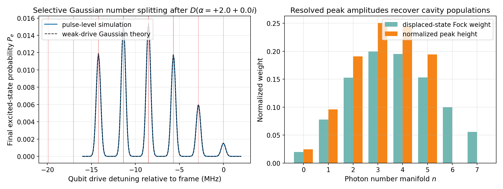

Number Splitting and Photon-State Discrimination¶
This tutorial explains how the dispersive interaction between a qubit and a cavity makes the qubit spectrum a direct probe of the cavity's photon-number distribution. The relevant notebooks are:
tutorials/10_core_workflows/04_selective_gaussian_number_splitting.ipynbtutorials/07_cavity_conditioned_qubit_spectroscopy_number_splitting.ipynbtutorials/08_dispersive_shift_and_dressed_frequencies.ipynb
Physics Background¶
Number-Dependent Qubit Spectrum¶
In the dispersive regime, the qubit transition frequency depends on the cavity photon number \(n\):
Each value of \(n\) defines a separate photon manifold: a Hamiltonian eigenspace corresponding to a definite cavity Fock state \(|n\rangle\) tensored with the qubit. Within the \(n\)-photon manifold, the qubit transition is at \(\omega_{ge}(0) + \chi n\).
For typical transmon-cavity systems, \(\chi/2\pi \sim -1\) to \(-10\) MHz. When \(|\chi|\) is larger than the qubit linewidth, each manifold peak is spectroscopically resolved — this is called number splitting or photon-number resolution.
Weak-Drive Spectroscopy¶
When a weak, selective Gaussian qubit probe is applied after a cavity displacement, the probability of exciting the qubit is:
where \(P_n = \langle n|\rho_c|n\rangle\) is the cavity's photon-number distribution, \(L\) is a normalized Lorentzian (or Gaussian in the weak-drive limit) centered at \(\omega_{ge}(n)\), and \(\Gamma_n\) is the linewidth of the \(n\)-th manifold.
In the selective (weak-drive) limit where the Gaussian pulse bandwidth \(\sigma_\omega^{-1}\) is narrow compared to \(|\chi|\), the peaks are well-resolved and their heights are proportional to \(P_n\). This makes spectroscopy a quantum-state tomography tool for the cavity photon-number distribution.
Coherent State Distribution¶
When the cavity is displaced to amplitude \(\alpha\), it is prepared in a coherent state \(|\alpha\rangle\) with a Poisson photon-number distribution:
The peak of the Poisson distribution is at \(n \approx |\alpha|^2\), and the width scales as \(|\alpha|\). For \(|\alpha| = 2\), the mean photon number is \(\bar{n} = |\alpha|^2 = 4\) with a distribution extending to \(n \sim 8\)–\(10\).
Workflow: Displacement + Selective Spectroscopy¶
Setup¶
import numpy as np
from cqed_sim.core import DispersiveTransmonCavityModel, FrameSpec
model = DispersiveTransmonCavityModel(
omega_c = 2 * np.pi * 5.0e9,
omega_q = 2 * np.pi * 6.0e9,
alpha = 2 * np.pi * (-200e6),
chi = 2 * np.pi * (-2.84e6), # ≈ -2.84 MHz
kerr = 2 * np.pi * (-2e3),
n_cav = 15,
n_tr = 2,
)
frame = FrameSpec(
omega_c_frame = model.omega_c,
omega_q_frame = model.omega_q,
)
Step 1: Displace the Cavity¶
from cqed_sim.io import DisplacementGate
from cqed_sim.pulses import build_displacement_pulse
gate = DisplacementGate(index=0, name="displace", re=2.0, im=0.0)
disp_pulses, disp_ops, _ = build_displacement_pulse(
gate, {"duration_displacement_s": 120e-9},
)
This creates a coherent state \(|\alpha = 2\rangle\) in the cavity. The resulting photon-number distribution is Poisson with \(\bar{n} = 4\).
Step 2: Selective Qubit Probe Sweep¶
from cqed_sim.sequence import SequenceCompiler
from cqed_sim.sim import SimulationConfig, simulate_sequence, reduced_qubit_state
from cqed_sim.pulses import Pulse
from cqed_sim.pulses.envelopes import gaussian_envelope
from cqed_sim.core import carrier_for_transition_frequency
from functools import partial
# Sweep frequencies spanning several chi intervals around ω_ge(0)
detunings_hz = np.linspace(-16e6, 2e6, 181)
pe_values = []
for det_hz in detunings_hz:
omega_probe = 2 * np.pi * det_hz # Rotating-frame detuning
carrier = carrier_for_transition_frequency(omega_probe)
probe_pulse = Pulse(
"q", 160e-9, 2.5e-6,
partial(gaussian_envelope, sigma=0.18),
carrier=carrier,
amp=2 * np.pi * 0.04e6, # Weak drive: amp ≪ |χ|
)
compiled = SequenceCompiler(dt=2e-9).compile(
disp_pulses + [probe_pulse], t_end=2.7e-6
)
result = simulate_sequence(
model, compiled, model.basis_state(0, 0), {**disp_ops, "q": "qubit"},
config=SimulationConfig(frame=frame),
)
rho_q = reduced_qubit_state(result.final_state)
pe_values.append(float(np.real(rho_q[1, 1])))
Choosing the probe amplitude
The probe amplitude must satisfy \(\Omega_{\text{probe}} \ll |\chi| / 2\pi\). If the drive is too strong, it redistributes population across manifolds and the peak heights no longer faithfully represent \(P_n\).
Step 3: Analyze Peak Heights¶
from cqed_sim.core import manifold_transition_frequency
# Expected peak positions in the rotating frame
expected_peaks_hz = [
manifold_transition_frequency(model, frame, n) / (2 * np.pi)
for n in range(8)
]
# The peak at detuning δ_n = n·χ/2π
# For χ/2π = -2.84 MHz: peaks at 0, -2.84, -5.68, -8.52, ... MHz
The result is a spectrum with peaks at:
| Manifold \(n\) | Detuning \(\delta_n = n\chi / 2\pi\) | Expected weight \(P(n)\) |
|---|---|---|
| 0 | 0 MHz | \(e^{-4} \approx 0.018\) |
| 1 | −2.84 MHz | \(4 e^{-4} \approx 0.073\) |
| 2 | −5.68 MHz | \(8 e^{-4} \approx 0.147\) |
| 3 | −8.52 MHz | \(\frac{32}{3} e^{-4} \approx 0.195\) |
| 4 | −11.36 MHz | \(\frac{32}{3} e^{-4} \approx 0.195\) |
Expected Spectrum¶
Running the workflow above produces the following number-splitting spectrum:

Each resolved peak corresponds to a different cavity photon-number manifold. The peak at 0 MHz detuning comes from \(n = 0\) (no photons), and peaks at \(n \cdot \chi / 2\pi\) correspond to states with \(n\) photons. The envelope of peak heights follows the Poisson distribution.
Validating Peak Heights as Photon-Number Weights¶
Notebook 04_selective_gaussian_number_splitting.ipynb performs an explicit validation:
- Simulate the displacement step, extract the cavity density matrix \(\rho_c\)
- Compute the theoretical photon-number distribution: \(P_n = \langle n|\rho_c|n\rangle\)
- Extract the measured peak heights from the spectroscopy sweep
- Normalize both by their sum and compare
All three — simulated Fock weights, measured peak heights, and ideal Poisson distribution — should agree to within numerical precision when the weak-drive and selective-Gaussian conditions are satisfied.
# Extract simulated Fock weights
from cqed_sim.core import coherent_state, prepare_state, StatePreparationSpec, qubit_state
from cqed_sim.sim import reduced_cavity_state
import numpy as np
initial = prepare_state(
model,
StatePreparationSpec(qubit=qubit_state("g"), storage=coherent_state(2.0)),
)
rho_c = reduced_cavity_state(initial)
simulated_fock_weights = np.real(np.diag(np.array(rho_c)))
# Ideal Poisson weights for |α=2⟩
alpha_sq = 4.0
ideal_poisson = np.array([
np.exp(-alpha_sq) * alpha_sq**n / np.math.factorial(n)
for n in range(model.n_cav)
])
Calibration Interpretation¶
In the experiment, number splitting is used to:
- Measure \(\chi\) — the frequency spacing between peaks gives \(\chi\) directly
- Verify cavity state preparation — the peak amplitudes diagnose the cavity state
- Count photons QND — a sufficiently long selective probe can distinguish \(|n\rangle\) from \(|n\pm1\rangle\) without destroying the photon
The selectivity condition for QND discrimination is \(\Omega_R \ll |\chi|\), where \(\Omega_R\) is the Rabi frequency at the peak of the Gaussian. This sets a minimum required pulse duration \(\tau \gtrsim 2\pi / |\chi|\).
Related Notebooks¶
tutorials/10_core_workflows/01_displacement_then_qubit_spectroscopy.ipynb— displacement + spectroscopytutorials/10_core_workflows/04_selective_gaussian_number_splitting.ipynb— weight validationtutorials/07_cavity_conditioned_qubit_spectroscopy_number_splitting.ipynb— foundational curriculumtutorials/08_dispersive_shift_and_dressed_frequencies.ipynb— computing \(\chi\) and dressed levels
See Also¶
- Displacement & Spectroscopy — end-to-end workflow
- Physics & Conventions — dispersive-shift sign convention